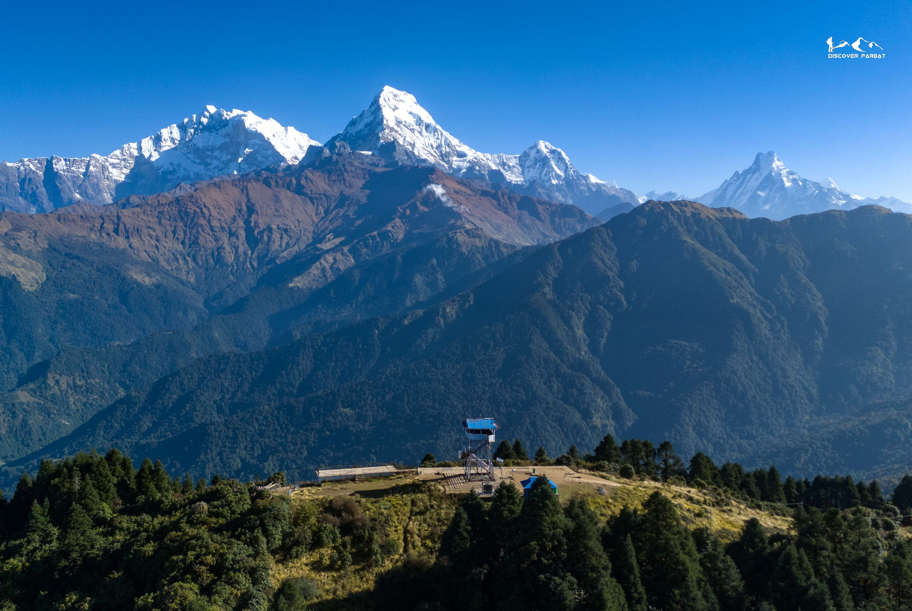
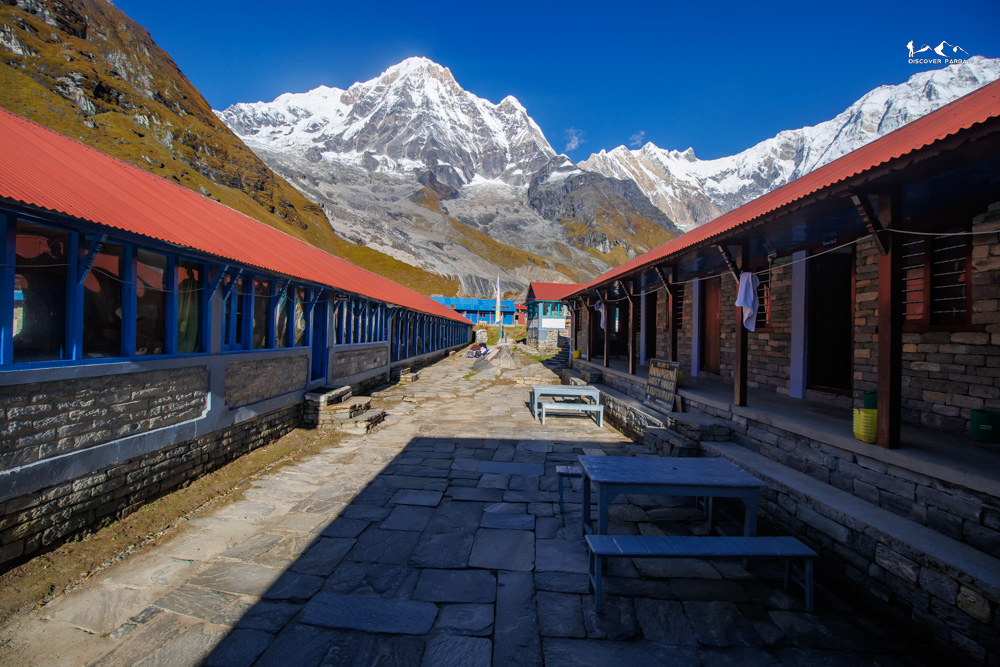
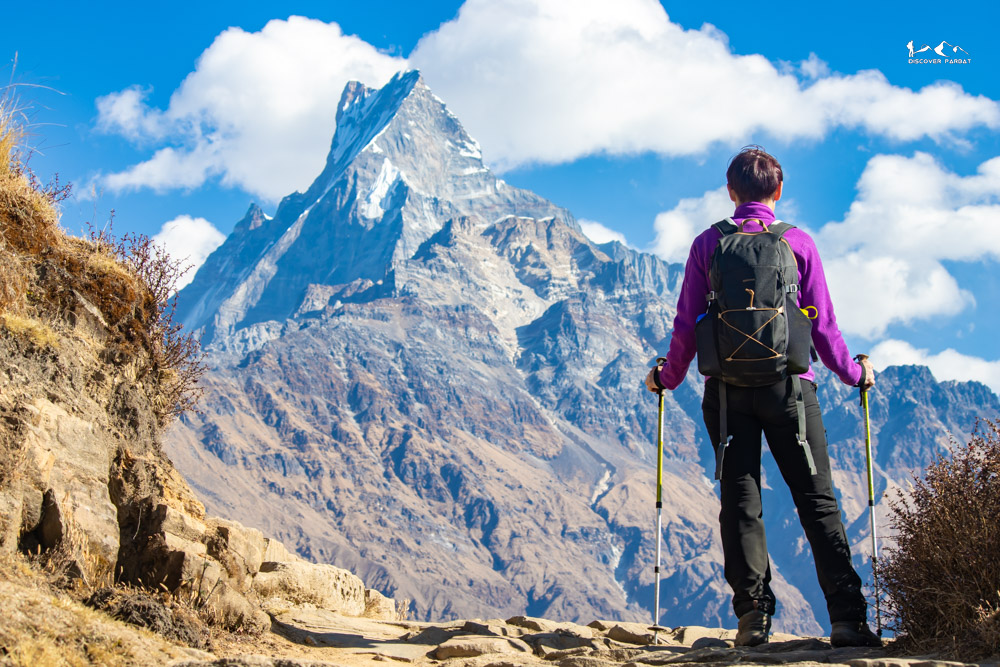
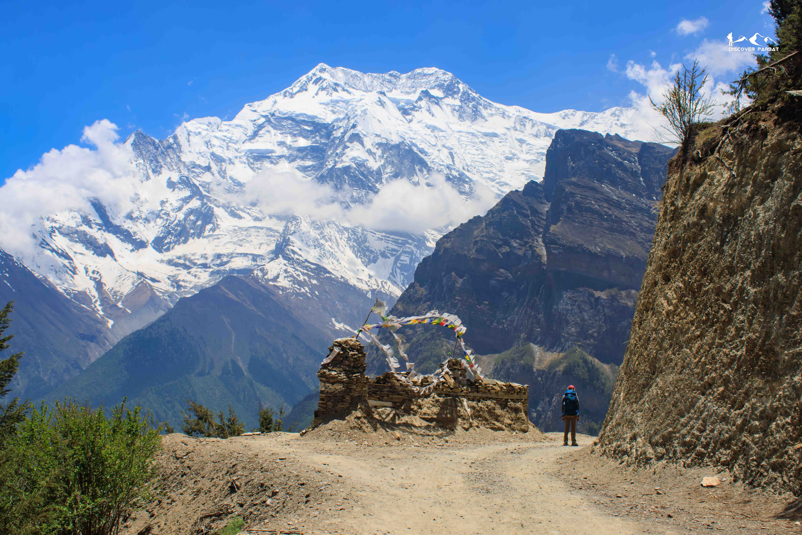

From 4-day village walks to 14-day Himalayan journeys
Explore handpicked trekking experiences across the Annapurna region and beyond. Our routes are designed to combine authentic village life, less crowded trails, and breathtaking Himalayan views.
Quiet trails we opened and guide ourselves, with homestays, local families and wide mountain views far from the busy routes.
Nepal's best-known routes, led by our own local guides, from short viewpoint treks to the full Annapurna Circuit.

4 DaysClassic Himalayan short viewpoint trek
 5 Days
5 Days
Ridge trek towards Fishtail
 7 Days
7 Days
Trek with views of multiple eight-thousanders
 8 Days
8 Days
Beautiful offbeat ridge trek

10 DaysClassic Himalayan journey

10 DaysMardi, Poonhill & Kokhe

12 DaysClassic Himalayan circuit over Thorong La
| Trek | Days | Difficulty | Max Altitude | Region |
|---|---|---|---|---|
| Short Kokhe Danda Trek | 4 | Easy | 3,310 m | Parbat |
| Poonhill Trek | 4 | Easy | 3,210 m | Annapurna |
| Kokhe Danda Trek | 5 | Easy | 3,310 m | Parbat |
| Mardi Himal Trek | 5 | Moderate | 4,000 m | Annapurna |
| Short Multiple Viewpoints Trek | 6 | Easy | 3,637 m | Parbat & Annapurna |
| Pikey Peak Trek | 7 | Easy | 4,065 m | Everest Region |
| Khopra Ridge Trek | 8 | Moderate | 3,660 m | Annapurna |
| Annapurna Base Camp Trek | 10 | Moderate | 4,130 m | Annapurna |
| Mardi Himal & Poonhill Trek | 10 | Moderate | 4,000 m | Annapurna & Parbat |
| Annapurna Circuit Trek | 12 | Challenging | 5,416 m | Annapurna |
| Multiple Viewpoints Trek | 14 | Moderate | 4,660 m | Parbat & Annapurna |
Tell us your dates, fitness and what you want to see, and we'll suggest a route or build a custom trek around you.
We focus on authentic experiences by connecting local homestays, promoting lesser-known trails, and ensuring every trek offers both cultural depth and panoramic Himalayan beauty. Our routes are carefully designed to avoid crowds while maximizing viewpoints and local interaction.